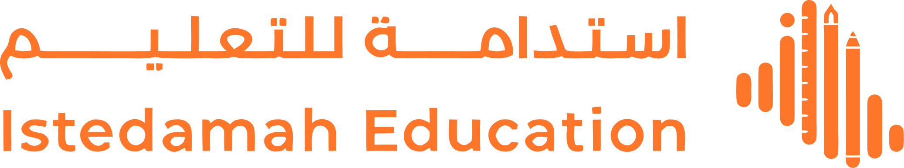
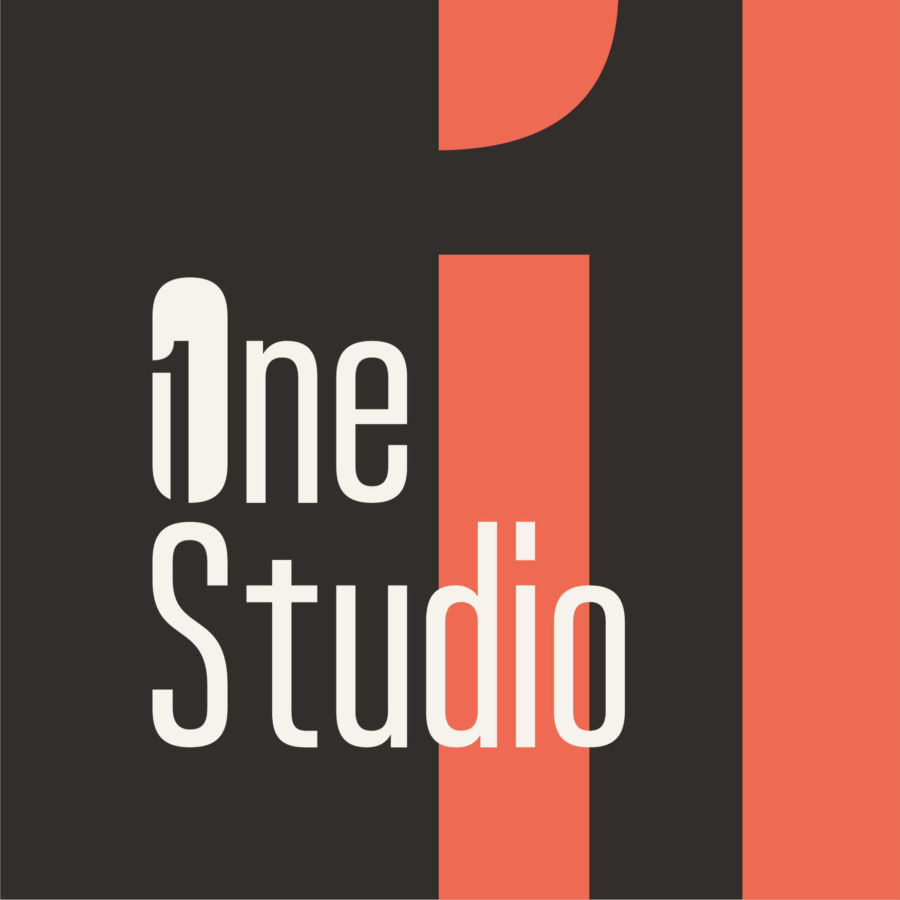

تحليل المنافسين والفرص المتاحة في سوق التعليم الإلكتروني
المنصة تعمل بالكامل بدون اتصال، والمزامنة تحدث تلقائياً عند توفر الإنترنت
محتوى مرتبط بالمنهج، اختبارات ذكية، تقييم بالذكاء الاصطناعي — لا ألعاب سطحية
تجربة مختلفة لكل مرحلة دراسية بناءً على سلوك التعلم الفعلي للطالب
لا يمكن بناء ميزات التفاعل (Gamification) أو الذكاء الاصطناعي بنجاح دون تأسيس منهج أكاديمي صارم ومتين كخطوة أولى.
دعم التعلم بدون إنترنت (Offline) ليس ميزة إضافية ورفاهية، بل هو شرط أساسي للنجاح في الأسواق ذات البنية التحتية الهشة.
التوافق التام مع المنهج المدرسي وتقديم محتوى عالي الجودة والدقة هو العملة الحقيقية التي تبني ثقة العائلات والمدارس.
المسار الوحيد المضمون والمستدام للنجاح هو: الصرامة الأكاديمية أولاً — ثم أدوات التفاعل والتحفيز — وأخيراً طبقة الذكاء الاصطناعي.
لا توجد منصة واحدة من الـ 21 منصة نجحت في الجمع بين: المنهجية الأكاديمية العميقة، نتائج الامتحانات المضمونة، والمرونة التقنية المطلوبة للتعامل مع البنية التحتية الضعيفة في العراق.
على عكس المنافسين الذين يتطلبون بنية تحتية قوية، تم تصميم نظامنا لتجاوز انقطاعات الإنترنت والكهرباء المتكررة في العراق لضمان استمرارية التعلم.
نضع بناء الثقة قبل "الترفيه". نقدم تغطية شاملة للمناهج، بنوك أسئلة موثقة، ومحاكاة دقيقة للامتحانات لضمان النتائج.
بدلاً من الفيديوهات التقليدية، تفرض منصتنا حلقة صارمة (شرح — تدريب — إتقان) مع خطط دراسية وتتبع دقيق للمستوى.
استمعنا إلى الطلاب على عدة مراحل قبل أن نبدأ بالتصميم
7 مقابلات مع طلاب من 3 مراحل عمرية مختلفة — سألناهم: كيف تدرسون؟ ما الذي يزعجكم؟ وما الذي يساعدكم؟
من الملاحظات، بنينا 3 شخصيات تمثل كل مرحلة — بمشكلاتها وأهدافها واحتياجاتها الحقيقية
مررنا بأكثر من جولة تصميم — كل جولة علمتنا شيئاً جديداً ساعدتنا نفهم احتياجات الطلاب بشكل أعمق قبل ما نبدأ نبني
يفضلون الطلاب التعليم عبر الفيديو (مقاطع قصيرة) والصوت بشكل واضح، مما يجعل المحتوى المرئي والسمعي الأداة الأكثر فاعلية للوصول إليهم
تتفاوت مدة التركيز حسب المرحلة: قصيرة في المراحل المبكرة، وتزداد تدريجياً كلما تقدمت المرحلة التعليمية
العديد من الطلاب يدرسون فقط قبل الامتحانات، ويعتمدون كثيراً على مصادر خارجية مثل يوتيوب لسد الفجوات
المشكلة
يبدأ الدرس ولكن لا يكمله — لا يوجد ما يحفزه على الاستمرار
مقياس النجاح
يبدأ أول درس ويكمله
التجربة
تجربة أولى ممتعة وتحفيزية — نشعر أنها لعبة وليست حصة
المشكلة
تنتقل عشوائياً بين الدروس — لا تعرف نقاط ضعفها ولا تشعر بالتقدم
مقياس النجاح
تنتقل من المشاهدة إلى حل الاختبار والتنافس
التجربة
اختبار تشخيصي + لوحة تنافسية + خطة دراسة مخصصة
المشكلة
ضغط كبير من الوالد — لا يملك خطة واضحة لترتيب المراجعة
مقياس النجاح
يبدأ بسرعة، يكمل الدروس، ويعود أسبوعياً
التجربة
نسأله عن هدفه ونبني له خطة دراسة مخصصة
هدفنا النهائي هو أن يشعر الطالب بالتقدم والثقة أثناء التعلم — تجربة تبني الإحساس بالإنجاز خطوة بخطوة
أحمد يتعلم باللعب، وزهراء تحتاج التنافس ومتابعة تقدمها، ومصطفى يحتاج خطة واضحة — لا توجد واجهة واحدة تناسب الجميع
أولياء الأمور يستثمرون في النتائج الأكاديمية وليس في ساعات الاستخدام — لذا المحتوى المرتبط بالامتحان هو الأولوية القصوى في الإطلاق
خارطة طريق تعليمية تُعرّف الطالب دائماً بما درسه وما يجب أن يدرسه بعد ذلك
كل قرار تصميم مرتبط بشخص حقيقي ومشكلة حقيقية — وليس بافتراضات
قبل ما نعرض الجانب التقني — هل في أسئلة على ما تم عرضه حتى الآن؟
تقدم الإنجاز وإثبات المفاهيم التقنية
مرحلة استكشاف وإثبات مفهوم — وليس تسليم نهائي للمنتج
تقدم مرحلة البحث وإثبات المفهوم — وليس جدول تسليم المنتج النهائي
ما تم بناؤه كإثبات مفهوم — يحتاج اختبار وتحقق قبل الإطلاق
Cloud Run — تحجيم تلقائي
0-10 مثيلات • بدون خوادم
PostgreSQL 16
نسخ احتياطي 30 يوم • شبكة خاصة
Redis 7.2 — 2 جيجابايت
جلسات ومزامنة فورية
Cloud Storage + CDN
روابط موقعة • أرشفة تلقائية
فحوصات كل 5 دقائق
تنبيهات P0-P3 • لوحات متابعة
GitHub Actions → Docker
→ Cloud Run • بدون مفاتيح مكشوفة
5 إثباتات مفهوم لمعالجة المخاطر التقنية الأساسية
عرض مباشر للميزات المنجزة
عرض مباشر للميزات المنجزة
شاهدتم ما تم إنجازه تقنياً — الآن نعود للمنتج ونناقش المتبقي
المحتوى: الوصول إلى مواد المنهج الرسمي لفهرستها في المنصة، أو تأكيد آلية خط المحتوى المناسبة
التحقق من الجودة: الوصول إلى خبراء المنهج للتحقق من دقة مخرجات الذكاء الاصطناعي
نطاق الإطلاق التجريبي: تحديد الصفوف والمواد الدراسية للإطلاق الأول
سياسات النزاهة: تحديد الإجراءات المطلوبة عند كشف غش أو الاشتباه به
أولويات المتبقي: ترتيب أولوية الميزات المتبقية (الشهادات، الشارات، لوحات المتصدرين الجغرافية)
نرحب بأسئلتكم ومناقشتكم